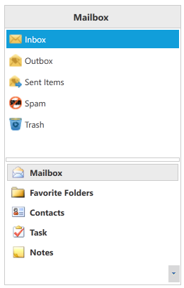

The appearance of the GroupBar control can be controlled using the VisualStyle property. VisualStyle is an attached property, which gets or sets the value for visual style. Styling can be applied to both the GroupBar control and its items. Nine built-in styles have been provided. These styles can be implemented at run time based on specified conditions.
|
Property |
Description |
|
VisualStyle |
Sets the visual style for the GroupBar control. The options provided are as follows.
1. Office2007Blue 2. Office2007Black 3. Office2007Silver 4. Office2010Blue 5. Office2010Black 6. Office2010Silver 7. Blend 8. Metro 9. Transparent
|
These styles can be applied in XAML as follows. The example below styles the GroupBar control with the Office 2010 Blue theme.
|
[XAML] <syncfusion:GroupBar syncfusion:SkinStorage.VisualStyle="Office2010Blue" />
|
Visual styles can be set in C# as follows.
|
[C#] SkinStorage.SetVisualStyle(groupBarInstance, "Office2010Blue");
|
Figure 534: GroupBar with Office2007Blue Style
Figure 535: GroupBar with Office2007Black Style

Figure 536: GroupBar with Metro Visual Style